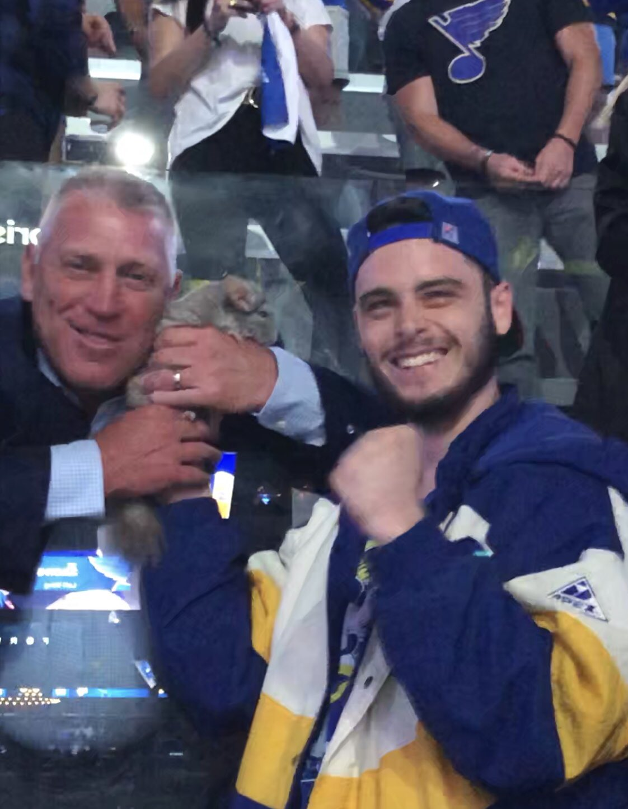
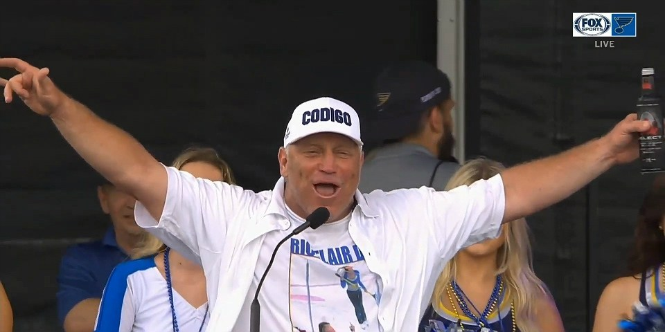

Leading the Crowd in a "Lets Go Blues" Chant Before Game 4 of the Stanley Cup Finals
Following a disasterous Game 3 performance at home - and the Blues facing a 2-1 series deficit -
St. Louis was in need of a spark. And Brett Hull had just the solution. Booze. Lots of it. The Hall
of Famer sauntered his way onto the ice just before puck drop, grabbed a microphone, and delivered a
'Lets Go Blues' so loud, so powerful, so beligerantly over-the-top, that surely, somewhere, Vince McMahon
was wiping a tear from one of his deadened eyes. The not-so-sober Enterprise Center crowd errupted. Thanks
in part to Ryan O'Reilly's 2 goals, but mainly Brett Hull's drunken antics, the Blues would go on to win
the game by the score of 4-2.
Brett Meets Boris

Everyone knows about Beyonce, Kelly Roland, and (last and certainly least) Michelle Williams,
but in 2019, destiny’s favorite child was the St. Louis Blues. For 52 years fans watched,
year after agonizing year, as their hometown hockey team took to the ice, skated around for a while,
only to hop in the zamboni and run over their hearts, throwing it in reverse and backing over them
once more for good measure. It was a tradition as timelessly St. Louis as toasted ravioli, provel
cheese, or rolling stop signs. It was a routine so pathetically predictable, so doomed to tragedy,
that even Sisyphus himself would have found it all a bit excessive. But here they were, against all odds,
in the Stanley Cup Finals, tied 2-2 with the team from The Worst City in America and Brett Hull, who had
been partying since about 1995, was not about to go quietly into the night. He grabbed a chinchilla, who
was in attendance for some reason, and posed with it.
'Just a dude walkin' down the street, havin a good time'
From Stan Musial to Nelly, St. Louis has had its share of local icons. But none have ever oozed Everybody’s
Drunk Uncle quite like Brett Hull staggering thru the streets of downtown, beer gut sticking out, cigarette in hand, proclaiming
himself “just a dude having a good time” the night before the championship parade.
Gloria.

A mortal human might have gone home and gotten some sleep before the parade. But Brett Hull is no mere mortal.
Taking the stage in front of a crowd of more than 100,000, wearing a shit with a picture of himself givng a ref the middle finger,
it appeared that rather than sleep, he simply drank more beers and pushed through. Talking through the side of his mouth, Hull
declared an end to "Lets Go Blues", saying "we don't have to go anymore. We already went". And then, raising his Budweiser to the air,
he belted out a few lines of Gloria, the Blues victory song. It was the most fitting end to what had been a long
couple of months for "The Golden Brett".